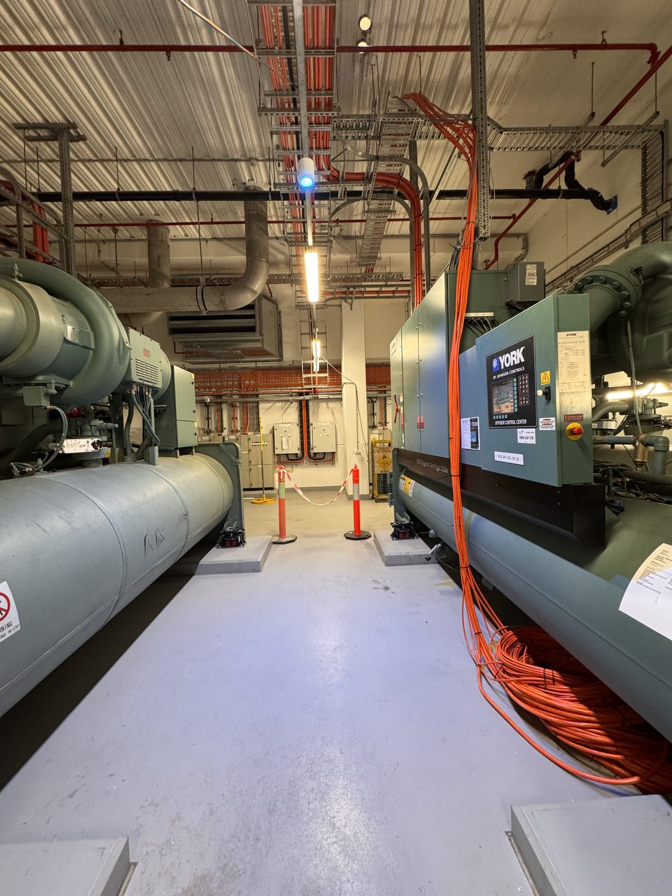
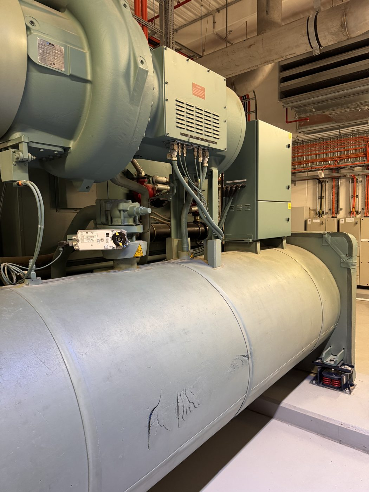
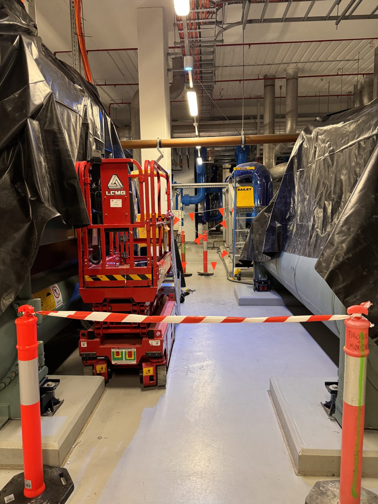
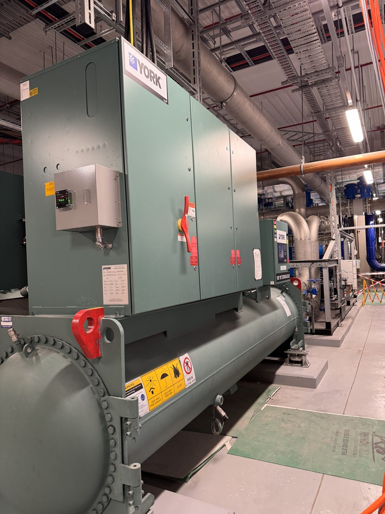
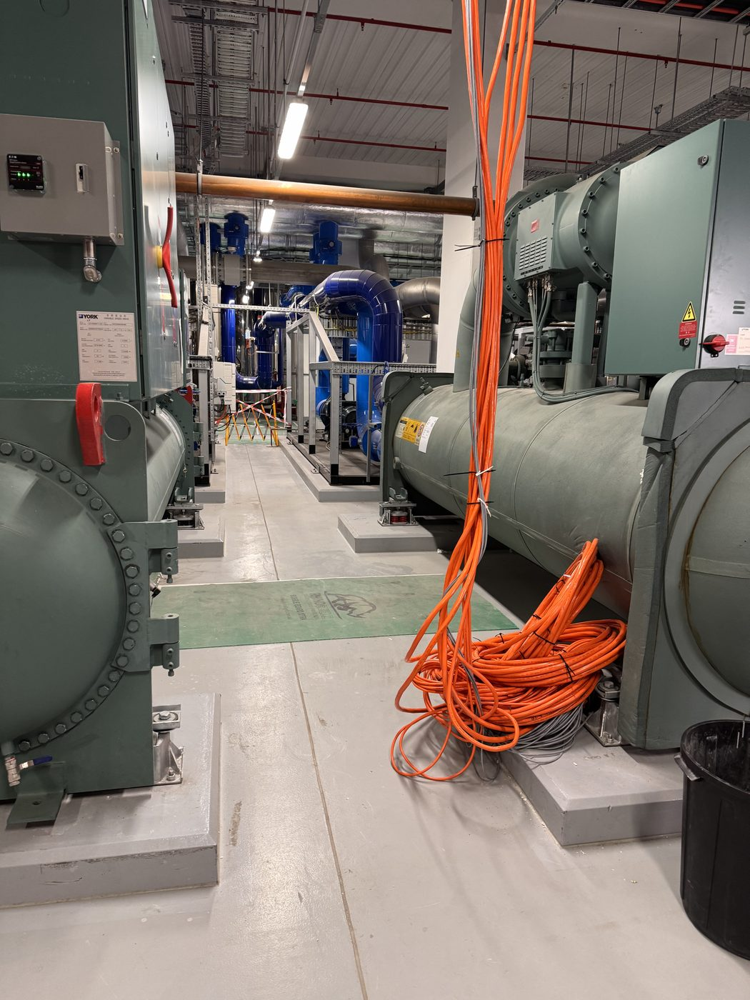
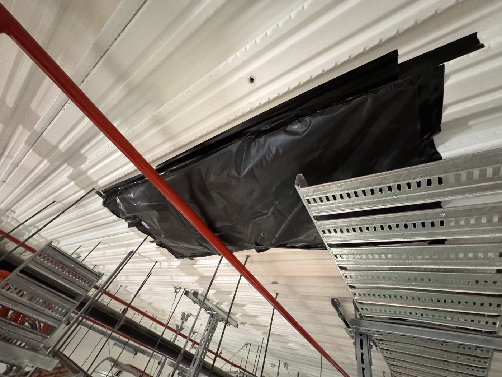
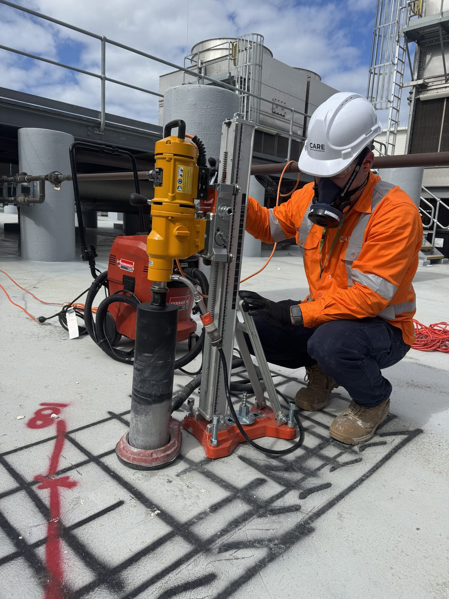
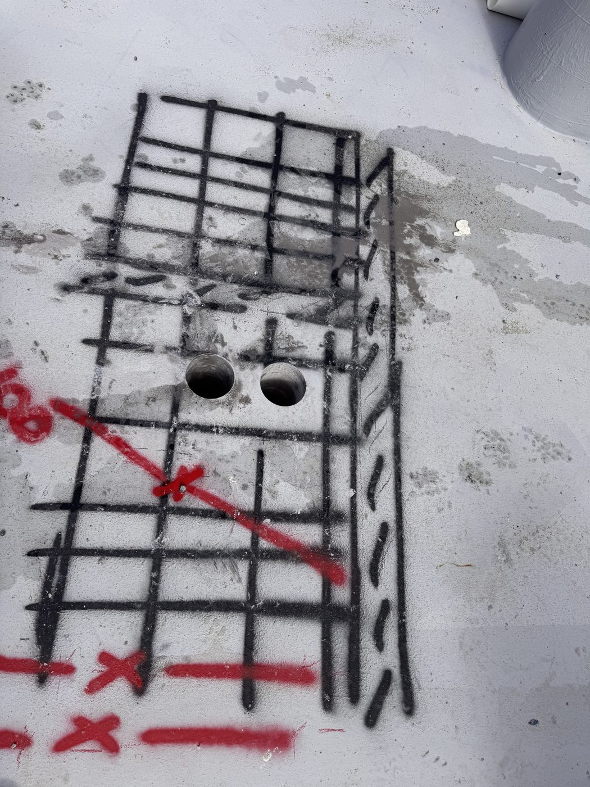
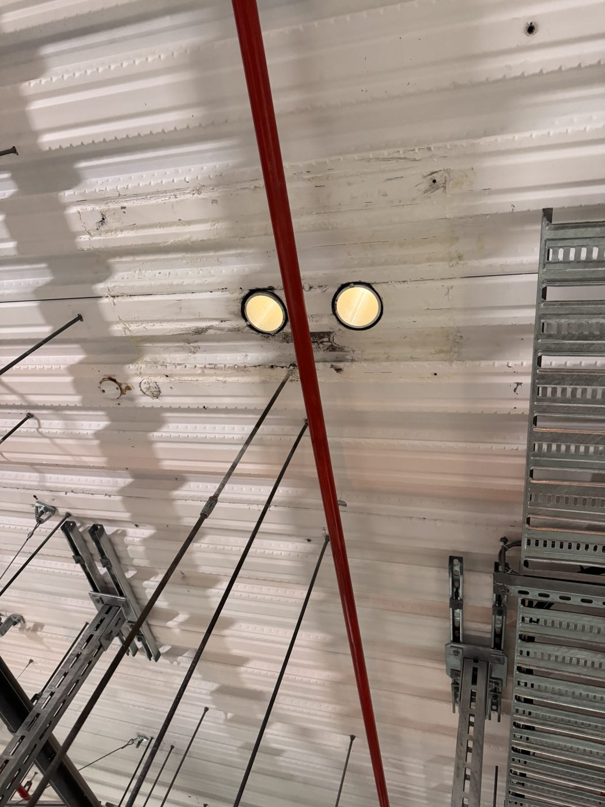
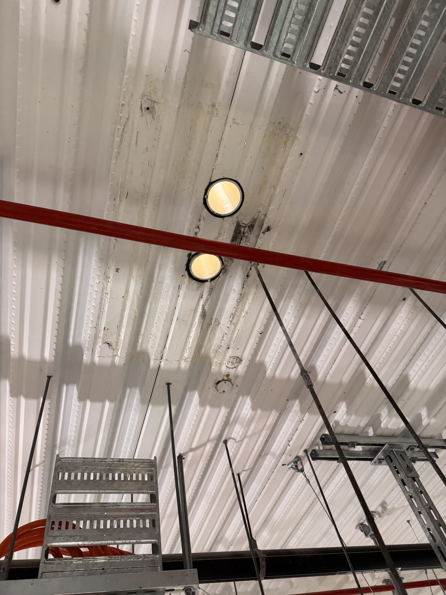

Case Study, Core Drilling, Live Data Centre
Drilling through a live slab without stopping the data centre.
Erilyan needed 4 core penetrations through a bondek roof slab directly above active plant and live services at one of the most critical data centre facilities in Sydney. Not a single drop of water entered the building.
4x127mm core holes
0Water ingress incidents
2Days on site
0Facility disruptions
The Project
A roof penetration job with no room for error.
CARE was approached by Erilyan during a live fit-out at one of Sydney's most critical data centre facilities. The introduction came through a site walkthrough with Ryan, the site supervisor, who wanted to walk the job with CARE before anything was committed to paper. After going through the site together and understanding exactly what was below, CARE put together a detailed methodology covering every step of the works.
The scope: 4 core holes at 127mm diameter through the concrete bondek roof slab above the Cooling Tower Yard, to allow new services to pass through. The complication: the plant room directly below was live and operational throughout construction, housing large industrial chillers, energised electrical switchboards, and dense cable tray infrastructure running at slab soffit level. Any water, slurry, or debris reaching that equipment was not acceptable.
We need to be super clean. Set up protection, clean up after. Like we were never there.Michael, Site Engineer, Erilyan
The Challenge
Working above equipment that can never get wet.
Wet core drilling produces water and slurry. That is unavoidable. On a standard job, that water is managed at slab level. Here, every drop falling from the soffit had a direct path onto live plant and energised equipment worth tens of millions of dollars.
The bondek profile added another layer of complexity: unlike a flat soffit, the ribbed steel deck creates voids that make it difficult to form a continuous seal against the concrete above, and difficult to fix temporary protection that will actually hold.
On top of the physical challenge, the facility operates under strict data centre access protocols. CARE's SWMS had to be reviewed and formally approved through Hammertech before anyone set foot on site. Silica controls, fit testing and current training were already in place as they are on every CARE job.
Our Approach
Two days. One to protect, one to drill.
Works were split across two days. Day 1 was entirely dedicated to installing protection and verifying pilot hole positions from both sides of the slab. Nothing was cored full diameter until the protection system was in place and confirmed watertight. Day 2 was the drilling, clean-up, and strip-out.
Pre-drilling GPR scan and mark-out
Penetration locations were GPR scanned prior to drilling to identify reinforcing steel and any embedded services within the slab. Hole positions were marked on the roof surface within a spray-painted grid to confirm clear locations between bar spacings.
Pilot hole verification
A 12mm pilot hole was drilled at each location before any full-diameter coring, allowing the breakout position to be verified from below before committing to the core.
Temporary sealing of pilot holes
Each confirmed pilot hole was sealed from below. Expanding foam was packed into the bondek rib voids around the hole to stop water tracking laterally through the deck.
Full underside protection system
A plywood backing board was fixed to the slab soffit at each core location using AnkaScrew fixings. Foam, Sikaflex perimeter seal and suspended plastic catchment created secondary containment below.
Wet core drilling from roof level
Four 127mm holes were wet-cored through the bondek slab from roof level using a diamond core rig, with a CARE spotter below for the full duration.
Silica controls as standard
All CARE workers hold current crystalline silica awareness training and up-to-date respirator fit test certificates. Wet diamond drilling, correct RPE and dust controls were in place.
Photo Record
Live plant, protection setup, drilling and completed penetrations.










The Result
Job done. Client happy. Data centre still running.
Works were completed across two days as programmed. The plant room, its equipment, and all live services were fully protected throughout. No water entered the facility at any point. All four penetrations were delivered clean and to diameter.
Erilyan's team confirmed the works met their expectations on all counts. CARE provided full ITP documentation as standard, giving Erilyan the quality records they needed for a live data centre environment.
Zero water ingress
Expanding foam, Sikaflex perimeter seal, plywood backing and suspended plastic catchment meant nothing reached the live equipment below.
Zero facility disruptions
The data centre remained fully operational throughout. No system interruptions, no unplanned downtime.
Silica controls as standard
Current training and fit test certificates across the crew. Wet drilling methods and correct RPE on every job.
ITP documentation delivered
Full Inspection and Test Plan records provided as standard, ready for the client's QA file.
Need concrete cutting in a live environment?